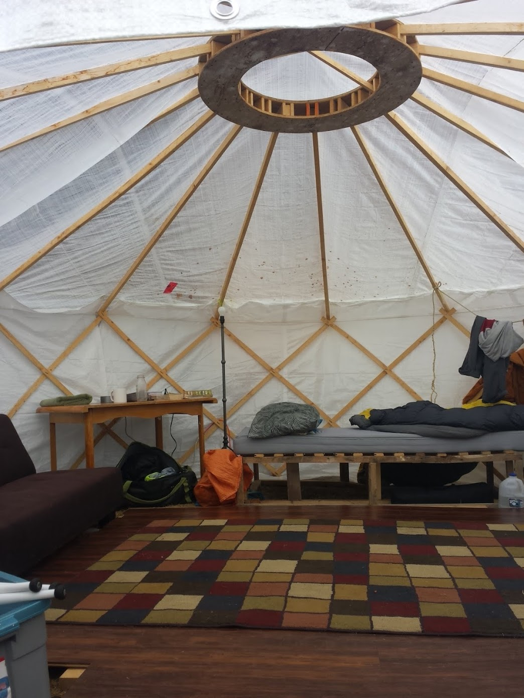
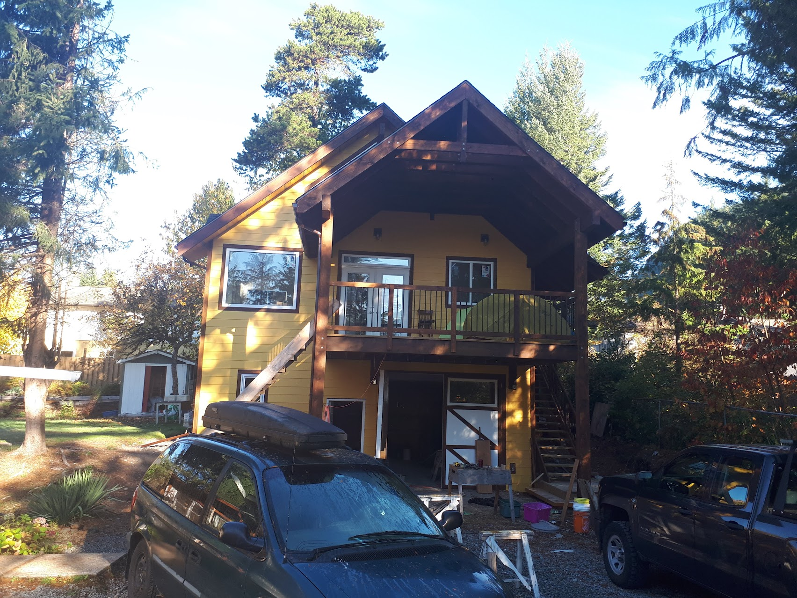

Building
I built and lived in a yurt for one summer in Squamish, BC. Not a very fancy yurt.
While I was living in this yurt I helped my friend build a carriage home on the property.
I purchased a home with partners in Whitehorse, Yukon. We then split it into two rental units. We gutted the house down to the studs and concrete. I re-designed and completely replaced the plumbing all the way to the street service below the foundation. New kitchens, new bathrooms and all new electrical.
More recently I designed and built a tiny home with a former partner of mine. We used locally sourced timber for the inside and outside with a focus on using wood and metal. The home rests on an old trailer I salvaged. It's an off-grid setup with no plumbing and an Amish-built wood stove cooktop and a solar system designed by me. It features large windows, white pine shiplap interior with cedar accents and rough white pine board and batten exterior painted with a traditional linseed pine tar paint. It currently sits in the corner of a field tucked against some popular trees on the Birch river. A very quiet spot.
Computers
I possess a strong ability to create and make things in the digital realm.
I have an Economics degree and three quarters of a Computer Science degree from the University of Manitoba.
I’ve built regression models that try and tease out the relationship between carbon dioxide emissions and GDP — they aren’t necessarily correlated.
I’ve built an AI system for path formation in graphs using the behaviour patterns present in ant colonies (AntColony Pdf) This is a sub-field within Artificial Intelligence that focuses on adapting biological behaviour for use in digital applications.
A group I was involved with built a collaborative video game where numerous participants could play music together in a web terminal alongside an AI system. We called it (Synth-AI)
I’m also quite capable in the design realm. I have an eye for taking photos, manipulating them in Photoshop, and structuring content to be displayed on the web. This website being an example (manitobaTime)
Creative
I experience emotions intensely. They often need to come out. I use the physical world to express them. Sometimes it’s via the athletic: planting, carpentry, running, climbing. Other times it’s written word or visual arts.
I’ve been reading and writing my entire life. Much of what I’m proud of is sort of a stream of consciousness style of writing or essay. Not very planned but more an honest expression of a feeling or a worldview that is striking me at the time. (Writings)
I’ve written a fiction novel, but it’s terrible and will never see the light of day.
I draw or paint every other day. (Art)
I enjoy taking (Photos). There's an interesting interaction between art and photography that I didn't really understand until I started practicing both. Learning to frame a photograph can be applied directly to figuring out how to construct an art piece.
Physicality
I have a body that I like to use. I have great physical intelligence and I’m quick to pick up a skill or sport.
Tree planting has been a career for me. I did eight seasons of work — typically 60 - 90 days from April to August. It’s a piece work arrangement — paid per tree. I excel in a competitive environment and through most of my career I was in the top 90 percentile in terms of performance. I love hard work. I planted somewhere in the neighbourhood of 800,000 trees. It would have been nice to hit a million…
Rock climbing. I’ve spent many years pursuing rock faces. To become proficient as a rock climber requires a level of dedication that doesn’t fit well into the regular routines of a nine to five lifestyle — at least in Manitoba. It worked great with tree planting's seasonal nature. So I would tree plant four months of the year and then climb the rest of the time. I scaled large mountains and small cliffs. I can climb steep faces up to 5.12. My favourite is crack climbing which is a very specialized form of climbing — you jam your hands and feet into cracks and wedge your body into positions that make you uncomfortable. My favourite place to climb is probably Indian Creek, Utah or perhaps Nuevo Leon, Mexico.